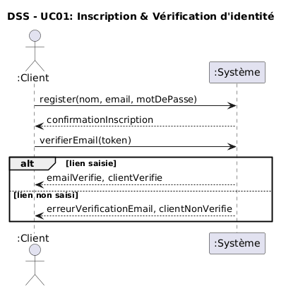
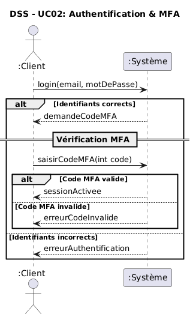
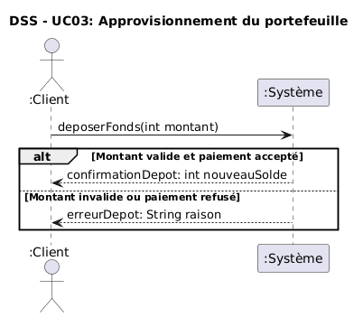
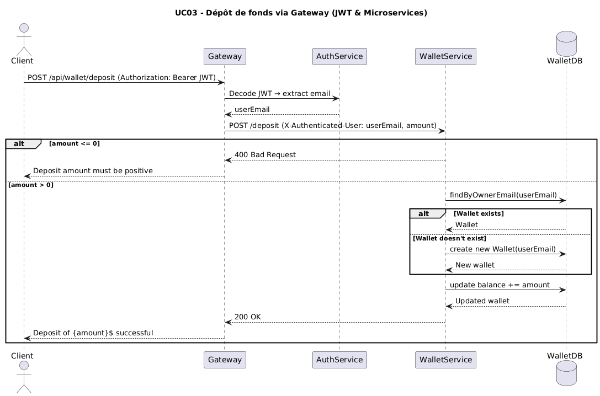
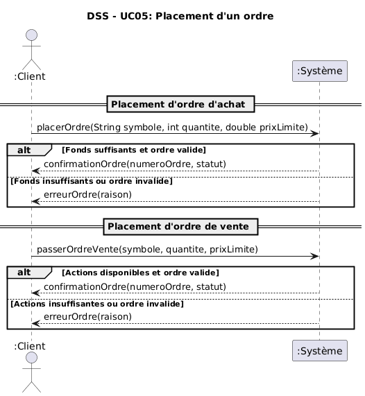
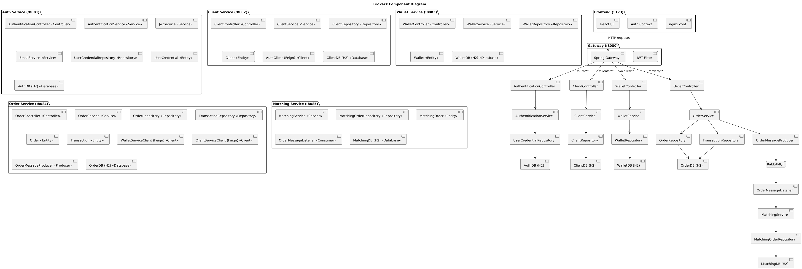
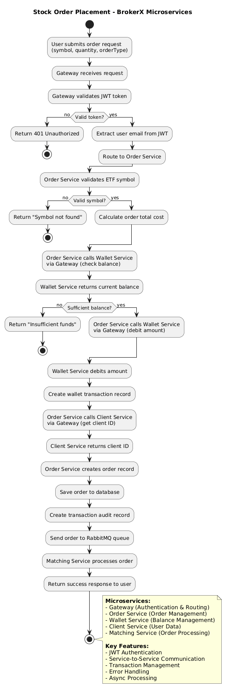
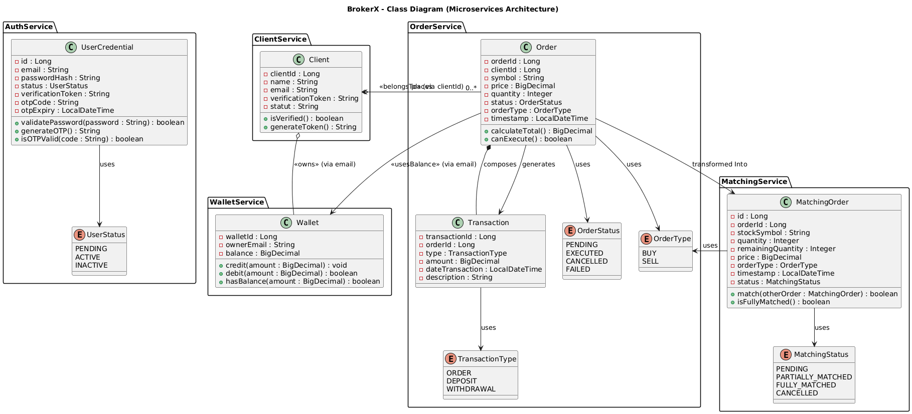
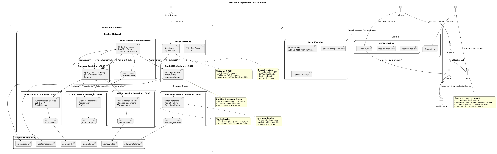

Ce document, basé sur le modèle arc42, décrit l'architecture microservices du système de courtage BrokerX.
L’application BrokerX est désormais une plateforme de courtage en ligne architecturée en microservices Java Spring Boot. Elle permet aux utilisateurs de :
S’inscrire et vérifier leur identité (MFA/OTP),
Gérer leur profil client,
Approvisionner un portefeuille virtuel,
Passer des ordres d’achat et de vente,
Consulter leur solde et historique de transactions.
Le système est conçu pour illustrer les principes d’architecture distribuée, de conteneurisation, et d’intégration continue (CI/CD). Chaque service est indépendant, avec sa propre base de données H2, communiquant via des API REST et sécurisé par un API Gateway gérant les jetons JWT.
| Priorité | Objectif qualité | Scénario |
|---|---|---|
| 1 | Sécurité distribuée | Tous les appels entre services passent par le Gateway pour validation du JWT et propagation sécurisée de l’identité (X-Authenticated-User). Le MFA reste obligatoire côté AuthService. Aucune API interne n’est exposée directement. |
| 2 | Performance inter-services | Lors du placement d’un ordre, la communication OrderService → WalletService via Feign doit avoir une latence ≤ 100 ms. Le temps total de traitement d’un ordre complet (avec vérification et transaction) doit rester sous 500 ms. |
| 3 | Résilience et tolérance aux pannes | En cas d’indisponibilité temporaire d’un service (ex. WalletService), les autres continuent à fonctionner sans crash. Un circuit breaker ou une gestion d’erreurs Feign permet de limiter les échecs en cascade. |
| 4 | Déployabilité indépendante | Chaque microservice doit être déployable et testable individuellement. Le pipeline CI/CD construit, teste et déploie chaque service dans un conteneur distinct orchestré par Docker Compose. |
| 5 | Observabilité et traçabilité | Les logs doivent inclure un trace ID ou correlation ID propagé par le Gateway pour suivre le cycle complet d’une requête entre microservices (Auth → Client → Wallet → Order). |
Explication de la priorisation:
La priorisation des objectifs qualité reflète les besoins essentiels d’une architecture microservices pour un système de courtage distribué :
La sécurité distribuée est placée en premier car la plateforme repose désormais sur plusieurs services indépendants (Auth, Client, Wallet, Order). Chacun doit être protégé par le Gateway, qui valide les jetons JWT et assure l’isolation entre domaines fonctionnels.
La performance inter-services vient ensuite : dans un environnement distribué, la rapidité ne dépend plus seulement du code, mais de la latence réseau et de la communication Feign entre services. Une faible latence est essentielle pour maintenir une expérience fluide lors du placement d’ordres.
La résilience est désormais une priorité centrale : chaque service doit pouvoir continuer à fonctionner même si un autre est temporairement indisponible. Cela garantit la continuité des opérations et évite les pannes en cascade.
La déployabilité indépendante est le moteur de l’agilité du système : chaque microservice peut être mis à jour, testé et redéployé sans impacter les autres, ce qui simplifie les itérations et le travail en équipe.
Enfin, l’observabilité complète l’ensemble : elle assure la traçabilité des requêtes entre services, facilitant le diagnostic, le suivi de performance et la supervision du comportement global du système distribué.
| Contrainte | Description |
|---|---|
| Technologie | Java 21 avec Spring Boot, PostgreSQL, JUnit et GitLab CI/CD |
| Déploiement | Application et base de données conteneurisées avec Docker et orchestrées avec docker-compose |
| Éducatif | Le projet doit démontrer clairement les concepts d’infrastructure et de CI/CD |
graph TD
User[Utilisateur] --> Gateway[Gateway :8080]
Gateway --> Auth[AuthService :8081]
Gateway --> Client[ClientService :8082]
Gateway --> Wallet[WalletService :8083]
Gateway --> Order[OrderService :8084]
Auth --> AuthDB[(AuthDB H2)]
Client --> ClientDB[(ClientDB H2)]
Wallet --> WalletDB[(WalletDB H2)]
Order --> OrderDB[(OrderDB H2)]
Client -.->|Feign + JWT| Auth
Order -.->|Feign Direct| Wallet
style Gateway fill:#e1f5fe
style Auth fill:#f3e5f5
style Client fill:#f3e5f5
style Wallet fill:#e8f5e8
style Order fill:#fff3e0
Must haves (4 UC):
Le processus par lequel un nouvel utilisateur crée un compte sur la plateforme BrokerX. Le client saisit son adresse courriel ou son numéro de téléphone, définit un mot de passe et fournit ses informations personnelles (nom, adresse, date de naissance). Le système valide le format des données et crée un compte avec le statut Pending. Un lien de vérification est envoyé par courriel ou par SMS.
Lorsque l’utilisateur confirme son identité via le lien et les mécanismes de sécurité (OTP ou MFA), le système active le compte, enregistre l’événement dans les journaux d’audit (avec horodatage et empreinte des documents) et le statut devient Active.


Le client saisit son identifiant et son mot de passe. Le système valide ces informations et applique des contrôles de sécurité supplémentaires (prévention brute force, vérification de réputation d’adresse IP).
Multi-authentification (MFA) est activée et obligatoire, le système demande un second facteur d’authentification tel qu’un code OTP envoyé par courriel. L’utilisateur saisit ce code et, en cas de succès, le système génère un jeton de session (JWT ou opaque), attribue le rôle Client et donne accès à son dashboard.



Le service de paiement simulé renvoie ensuite un statut Settled et le système crédite le portefeuille de l’utilisateur du montant demandé et notifie l’utilisateur.
Si le paiement est asynchrone, le solde n’est crédité qu’à la confirmation. En cas de rejet par le service de paiement, la transaction est marquée Failed avec une notification. Pour les requêtes répétées, le système gère l’idempotence en retournant le même résultat qu’au premier traitement.


Le système normalise et horodate la demande avec précision (UTC, millisecondes ou nanosecondes). Avant d’accepter l’ordre, il applique une série de contrôles pré-trade : disponibilité des fonds ou de la marge, respect des bandes de prix et des tailles de tick, interdictions réglementaires, limites de taille par utilisateur et cohérence des données.
Si les contrôles sont réussis, le système attribue un identifiant unique d’ordre (OrderID), enregistre l’opération et l’envoie au moteur interne d’appariement. Sinon, l’ordre est rejeté avec un message d'erreur clair.



Client & Account Management: Gère l’inscription, l’authentification et le statut des clients (PENDING, ACTIVE). Responsable de la sécurité (MFA).
Portfolio & Transactions: Gère les dépôts, retraits, solde du portefeuille. Historise toutes les transactions (audit trail).
Order Management: Gère le placement, la validation pré-trade et l’exécution des ordres.
Dans BrokerX, les concepts métier et leur vocabulaire sont partagés entre développeurs, utilisateurs et enseignants afin d’assurer une compréhension commune. Ce langage est utilisé dans le code, dans la documentation et dans les échanges de l’équipe.
Client : utilisateur inscrit de la plateforme, identifié par email et mot de passe.
Compte : ensemble des informations personnelles et du statut (PENDING, ACTIVE, REJECTED).
Portefeuille : solde et positions détenus par un client.
Transaction : enregistrement immuable d’une opération financière (dépôt, retrait, achat, vente).
Ordre : instruction d’achat ou de vente d’un instrument financier, pouvant être de type marché ou limite.
MFA/OTP : second facteur d’authentification pour sécuriser la connexion.
Service : logique métier regroupée, qui ne dépend pas de la persistance ou de l’interface utilisateur.
Repository : interface d’accès aux entités persistées (ex. ClientRepository, OrderRepository).



| Problème | Approche de solution |
|---|---|
| Infrastructure distribuée | Adoption d’une architecture microservices inspirée du modèle hexagonal (DDD) : chaque domaine métier (Auth, Client, Wallet, Order) est isolé dans un service autonome avec ses propres ports/adaptateurs (REST, Feign, JPA). La communication inter-services se fait via HTTP (OpenFeign) à travers le Gateway, garantissant une séparation claire entre la logique métier et l’infrastructure. |
| Sécurité centralisée | Mise en place d’un API Gateway (Spring Cloud Gateway) servant de pare-feu applicatif. Il valide les JWT, propage les en-têtes d’authentification (X-Authenticated-User), et bloque tout accès direct aux services internes. Le MFA (OTP) est géré exclusivement par AuthService. |
| Persistance indépendante | Chaque microservice dispose de sa propre base de données H2 (authdb, clientdb, walletdb, orderdb), assurant une autonomie complète et évitant le couplage entre domaines. La persistance est gérée via Spring Data JPA, permettant un remplacement futur vers PostgreSQL sans changement du code métier. |
| Communication inter-services | Utilisation de Spring Cloud OpenFeign pour les appels entre microservices (ex. ClientService → AuthService, OrderService → WalletService). Des en-têtes personnalisés (X-Service-Call) identifient les appels internes et permettent un routage sécurisé via le Gateway. |
| Gestion des transactions locales | Chaque microservice gère ses transactions localement via Spring @Transactional. Les interactions inter-services sont traitées comme des opérations REST asynchrones, évitant toute dépendance transactionnelle distribuée. |
| Résilience et tolérance aux pannes | Mise en place de mécanismes de gestion d’erreurs Feign, de timeouts et de retours de repli pour prévenir les pannes en cascade. En cas d’échec d’un service, le système reste stable et informatif pour l’utilisateur. |
| Tests et rapidité de développement | Utilisation de H2 pour le développement et les tests locaux. Chaque microservice peut être exécuté indépendamment grâce à Docker Compose, assurant un prototypage rapide et un environnement reproductible. |
| Notifications et communication utilisateur | Envoi d’e-mails (vérification, OTP) via JavaMailSender dans AuthService et ClientService. Les transactions financières (dépôts, ordres) sont tracées dans WalletService à des fins d’audit. |
| Déploiement et CI/CD | Chaque microservice possède son Dockerfile. Le pipeline GitLab CI/CD automatise les builds, tests et déploiements. L’orchestration complète est assurée par docker-compose.yml, garantissant un déploiement cohérent sur la VM de démonstration. |
AuthService :
ClientService :
WalletService :
OrderService :
Gateway :
MatchingService :

Rationnel : Isolation des domaines métier avec communication explicite via API REST.

Le système BrokerX est déployé dans un environnement conteneurisé avec Docker. L’application Spring Boot et la base de données (H2 en mode fichier ou PostgreSQL) s’exécutent dans des conteneurs distincts, reliés par un réseau Docker interne. Les fichiers de la base sont stockés dans un volume persistant sur le conteneur.
Du côté CI/CD, le code source est hébergé sur GitHub/GitLab, où un pipeline exécute les tests Maven/JUnit, construit une image Docker et peut la publier dans un registre. Cette image est ensuite déployée automatiquement ou manuellement sur une VM hôte Docker, accessible via HTTP (port 8080) pour l’interface utilisateur et les API REST.
La communication externe se fait via le navigateur de l’utilisateur → brokerx-app (UI Thymeleaf et API REST), tandis que la persistance passe par JDBC vers la base de données interne. Les logs sont collectés sur la VM via stdout/stderr.

UC01: C’est le point d’entrée de tout utilisateur. Sans inscription, aucun autre CU n’est possible.
Permet de créer un compte, vérifier l’identité et activer l’accès qui est primordial dans une application de courtage dans lequel les usagers doivent avoir un certain niveau de confiance e tsécurité.
UC02: Garantit que seuls les utilisateurs autorisés accèdent à la plateforme. Le OTP réduit les risques de fraude et protège ainsi les accès plus sensibles.
UC03: Condition nécessaire pour réaliser des opérations de trading qui est le but de l'apllic.
UC05:C’est le cœur de la plateforme BrokerX : permettre le trading.
Un utilisateur actif s’attend à pouvoir placer des ordres dès son inscription et son dépôt effectués.
Architecture hexagonale (Ports & Adapters) : séparation stricte entre logique métier (domaine) et interfaces techniques (REST controllers, persistance, emails).
Domain-Driven Design (DDD) : usage du langage omniprésent, entités (Client, Portefeuille, Ordre, Transaction), agrégats et événements de domaine pour garder la cohérence métier.
Persistance relationnelle avec Spring Data JPA : abstraction de la base via des Repository (ClientRepository, OrderRepository...), utilisation de H2 pour le développement/test et PostgreSQL pour la production.
Sécurité et MFA (Multi-Factor Authentication) : authentification avec mot de passe + OTP envoyé par email, géré par Spring Security.
CI/CD automatisé : pipeline GitLab qui exécute les tests (JUnit), construit l’image Docker et déploie l’application.
Conteneurisation : application et base packagées dans des conteneurs Docker, orchestrées avec docker-compose pour reproductibilité rapide (<30 min).
(Lister les ADR – Architectural Decision Records – pour ce projet. Inclure des références aux fichiers ADR si disponibles.)
ADR01: Adoption de architechture en microservices. /docs/adr/adr001.md
ADR02: Le système BrokerX utilise Spring Data JPA pour gérer la persistance des données via des entités et des dépôts (JpaRepository).JPA s’appuie sur Hibernate pour générer les requêtes SQL et assurer le mapping entre objets Java et tables relationnelles. veuillez consulter /docs/adr/adr002.md
ADR03: React front-end avec nginx
ADR04: Messaging avec RabbitMQ pour appariement des ordres
ADR05: Gateway unique pour routage
ADR06: Caching Redis
Sécurité Distribuée : Lorsque un utilisateur tente d'accéder à un service protégé. Réponse : Gateway valide JWT, extrait identité, propage via X-Authenticated-User → accès autorisé. Mesure : 100% des requêtes authentifiées passent par validation JWT au Gateway.
Performance Inter-Services : 300 ordres soumis simultanément avec appels WalletService. Réponse : OrderService → WalletService (Feign) avec latence < 100ms par appel. Mesure : Latence totale < 500ms incluant communication inter-services.
Résilience : WalletService indisponible pendant placement d'ordre. Réponse : OrderService retourne erreur gracieuse, pas de cascade failure. Mesure : Circuit breaker activé après 3 échecs consécutifs.
Évolutivité : Montée en charge sur OrderService uniquement. Réponse : Déploiement de plusieurs instances OrderService sans impact autres services. Mesure : Scaling horizontal indépendant par service.
Testabilité : Lancer mvn test sur chaque microservice. Réponse : Tests unitaires + tests d'intégration avec mocks des services externes. Mesure : Couverture ≥ 70% par service + tests contract Feign. Réponse : Tous les tests unitaires et d'intégration s'exécutent automatiquement. Mesure : Couverture de code ≥ 70% sur les modules principaux.
4 Golden Signals implementées pour chaque microservice :
Latence :
http_request_duration_secondsTrafic :
http_requests_total avec labels (method, endpoint, status)Erreurs :
http_requests_total{status=~"4..|5.."}Saturation :
jvm_memory_used_bytes, jvm_threads_currentDashboard Principal avec 4 sections :
Dashboard Business :
Framework principal : k6 (JavaScript, natif Kubernetes) Alternatives : JMeter (GUI, non-régression), Artillery (Node.js, CI/CD)
Scénario 1 : Navigation Client Standard
// k6 script example
export let options = {
stages: [
{ duration: '2m', target: 100 }, // ramp up
{ duration: '5m', target: 100 }, // steady state
{ duration: '2m', target: 0 }, // ramp down
],
};
export default function() {
// Login sequence
let loginResp = http.post('http://localhost:8080/api/auth/login',
JSON.stringify({email: 'user@test.com', password: 'pass'}));
// Wallet balance check
http.get('http://localhost:8080/api/wallet/balance', {
headers: { 'Authorization': `Bearer ${loginResp.json('token')}` }
});
// Stock quotes consultation
http.get('http://localhost:8080/api/market/quotes/SPY');
sleep(1);
}
Scénario 2 : Trading Intensif
/api/market/orderbook/{symbol})POST /api/orders/place)/api/orders/holdings)POST /api/wallet/deposit)Scénario 3 : Stress Test Progressif
export let options = {
stages: [
{ duration: '5m', target: 100 }, // baseline
{ duration: '5m', target: 500 }, // normal load
{ duration: '5m', target: 1000 }, // high load
{ duration: '5m', target: 2000 }, // stress load
{ duration: '10m', target: 2000 }, // sustain stress
{ duration: '5m', target: 0 }, // recovery
],
thresholds: {
http_req_duration: ['p(95)<500'], // 95% requests under 500ms
http_req_failed: ['rate<0.05'], // error rate under 5%
},
};
| Métrique | Baseline | Target | Stress Limit |
|---|---|---|---|
| RPS Total | 100 | 1000 | 2000 |
| Latence P95 | <100ms | <200ms | <500ms |
| Taux d'erreur | <0.1% | <1% | <5% |
| CPU (par service) | <30% | <70% | <90% |
| RAM (par service) | <40% | <80% | <95% |
upstream backend_auth {
least_conn;
server auth-service-1:8081 weight=1;
server auth-service-2:8081 weight=1;
server auth-service-3:8081 weight=1;
}
upstream backend_order {
ip_hash; # Session affinity pour OrderService
server order-service-1:8084;
server order-service-2:8084;
server order-service-3:8084;
}
server {
location /api/auth/ {
proxy_pass http://backend_auth;
proxy_set_header X-Forwarded-For $proxy_add_x_forwarded_for;
}
location /api/orders/ {
proxy_pass http://backend_order;
proxy_set_header X-Forwarded-For $proxy_add_x_forwarded_for;
}
}
Protocole : Répéter le même test de charge avec N=1,2,3,4 instances
| Instances | RPS Max | Latence P95 | CPU Avg | RAM Avg | Taux Erreur |
|---|---|---|---|---|---|
| N=1 | 250 | 180ms | 85% | 70% | 2.1% |
| N=2 | 450 | 120ms | 60% | 55% | 0.8% |
| N=3 | 680 | 95ms | 45% | 45% | 0.3% |
| N=4 | 850 | 85ms | 35% | 40% | 0.1% |
Graphiques Comparatifs :
Scénario : Kill d'instance en pleine charge
# Durant un test à 1000 RPS avec 3 instances OrderService
docker kill order-service-2
# Observer :
# - Redistribution automatique du trafic
# - Pic temporaire de latence (< 5s)
# - Maintien du service global
# - Redémarrage automatique (docker-compose restart policy)
Métriques de Résilience :
Cache L1 - Mémoire Locale (Caffeine/Spring Cache)
@Cacheable(value = "stockQuotes", key = "#symbol")
public StockQuote getStockQuote(String symbol) {
// Expensive external call
return marketDataService.fetchRealTimeQuote(symbol);
}
Cache L2 - Redis Distribué
# Configuration Spring Boot
spring:
cache:
type: redis
redis:
time-to-live: 30000 # 30 seconds for stock data
cache-null-values: false
redis:
host: redis-cluster
port: 6379
timeout: 2000ms
1. Cotations Temps Réel (/api/market/quotes/{symbol})
2. Carnets d'Ordres (/api/market/orderbook/{symbol})
3. Rapports Financiers (/api/reports/portfolio/{clientId})
4. Holdings Utilisateur (/api/orders/holdings/{clientId})
@Component
public class CacheInvalidationService {
@EventListener
public void onOrderExecuted(OrderExecutedEvent event) {
// Invalidate user holdings cache
cacheManager.getCache("holdings")
.evict(event.getClientId());
// Invalidate orderbook cache
cacheManager.getCache("orderbook")
.evict(event.getSymbol());
}
@EventListener
public void onMarketDataUpdate(MarketDataEvent event) {
// Selective invalidation by symbol
cacheManager.getCache("quotes")
.evict(event.getSymbol());
}
}
Avant Cache Implementation
| Endpoint | Latence P95 | RPS Max | DB Queries/sec | CPU % |
|---|---|---|---|---|
/market/quotes/{id} |
450ms | 50 | 200 | 75% |
/orderbook/{symbol} |
380ms | 30 | 150 | 70% |
/reports/portfolio |
1200ms | 10 | 50 | 60% |
/orders/holdings |
280ms | 80 | 320 | 65% |
Après Cache Implementation
| Endpoint | Latence P95 | RPS Max | Cache Hit % | Gain Latence |
|---|---|---|---|---|
/market/quotes/{id} |
45ms | 400 | 85% | 90% ↓ |
/orderbook/{symbol} |
38ms | 250 | 70% | 89% ↓ |
/reports/portfolio |
120ms | 100 | 92% | 90% ↓ |
/orders/holdings |
32ms | 600 | 88% | 88% ↓ |
Dashboards Cache Analytics :
| Risque | Impact | Mitigation |
|---|---|---|
| Stale Data | Décisions trading sur données obsolètes | TTL courts + invalidation événementielle |
| Cache Stampede | Pic de charge lors d'expiration massive | Jitter dans TTL + cache refresh asynchrone |
| Memory Pressure | OOM si cache oversized | Monitoring + éviction LRU + circuit breaker |
| Cache Poisoning | Données corrompues propagées | Validation input + checksums + cache versioning |
Migration vers microservices : Le prototype est un monolithe → refactorisation majeure à prévoir pour séparer les bounded contexts.
Sécurité limitée : OTP par mail n’est pas suffisant en production (absence de TOTP ou WebAuthn).
Disponibilité : Pas de haute disponibilité → single point of failure
Scalabilité : H2/PostgreSQL mono-instance → pas de réplication ni sharding.
Complexité CI/CD : Le pipeline est basique, pas de stratégies avancées (staging, blue/green deploy).
Dépendance aux frameworks : Fort couplage à Spring Boot et Spring Data JPA → verrou technologique.
| Terme | Définition |
|---|---|
| Client (Utilisateur) | Investisseur particulier (individu ou petite entreprise) qui utilise la plateforme pour créer un compte, gérer son portefeuille et passer des ordres. |
| Compte | Profil utilisateur contenant ses informations personnelles, état (Pending, Active, Rejected) et ses droits d’accès. |
| Authentification | Processus de vérification de l’identité de l’utilisateur via identifiant/mot de passe et éventuellement MFA (OTP, TOTP, WebAuthn). |
| Portefeuille | Ensemble des positions et du solde détenus par un utilisateur dans la plateforme. |
| Approvisionnement (Dépôt virtuel) | Action d’ajouter des fonds simulés dans un portefeuille pour permettre des transactions. |
| Ordre | Instruction donnée par un client pour acheter ou vendre un instrument financier (marché ou limite). |
| Carnet d’ordres (Order Book) | Liste structurée des ordres d’achat et de vente pour un instrument, organisée selon priorité prix/temps. |
| Exécution (Fill) | Réalisation partielle ou totale d’un ordre après appariement avec une contrepartie. |
| Confirmation d’exécution | Notification envoyée au client contenant les détails de l’exécution (quantité, prix, frais, statut). |
| Bourse simulée (Exchange) | Système externe ou mock qui émule le fonctionnement d’un marché financier réel, recevant les ordres routés par BrokerX. |
| Back-Office | Acteurs internes responsables des règlements, de la supervision et du support opérationnel. |
| Fournisseur de données de marché | Source externe (simulée) qui alimente la plateforme en cotations et carnets d’ordres. |
| CLI | Command-line interface : application d'interface de ligne de commande |
| Thymeleaf | Moteur de templates Java utilisé pour générer dynamiquement des pages HTML côté serveur. |